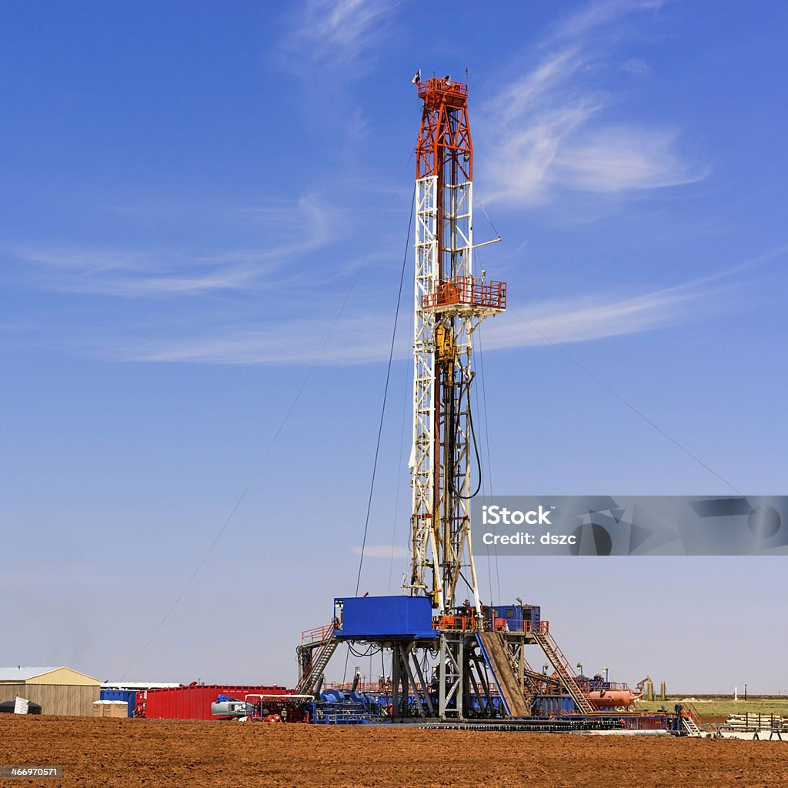

City Overview
Midland is located in West Texas and is a major hub for the oil and gas industry in the Permian Basin.
City Details
- Population: ~138,400
- Year Incorporated: 1906
- Region: West Texas
- Classification: Urban
- Average Income Level: $93,442. Above state average